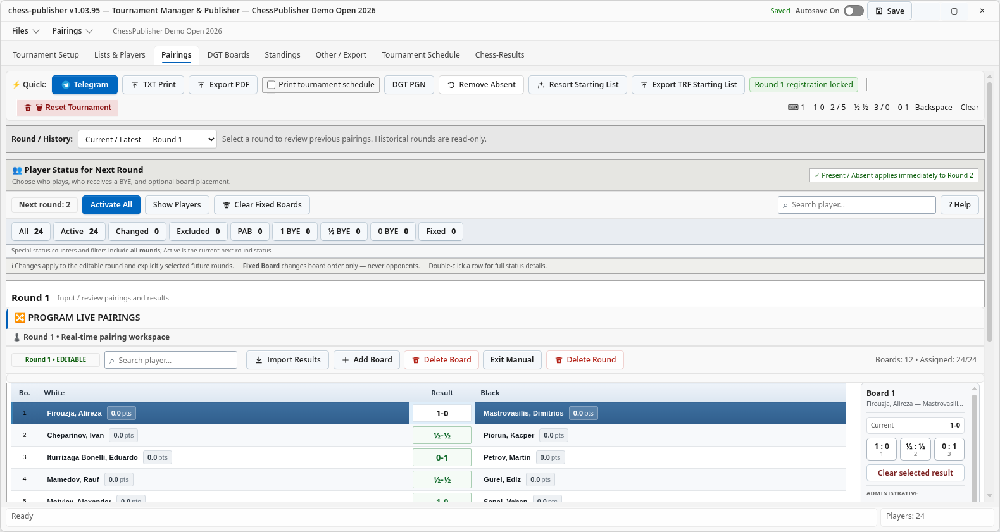
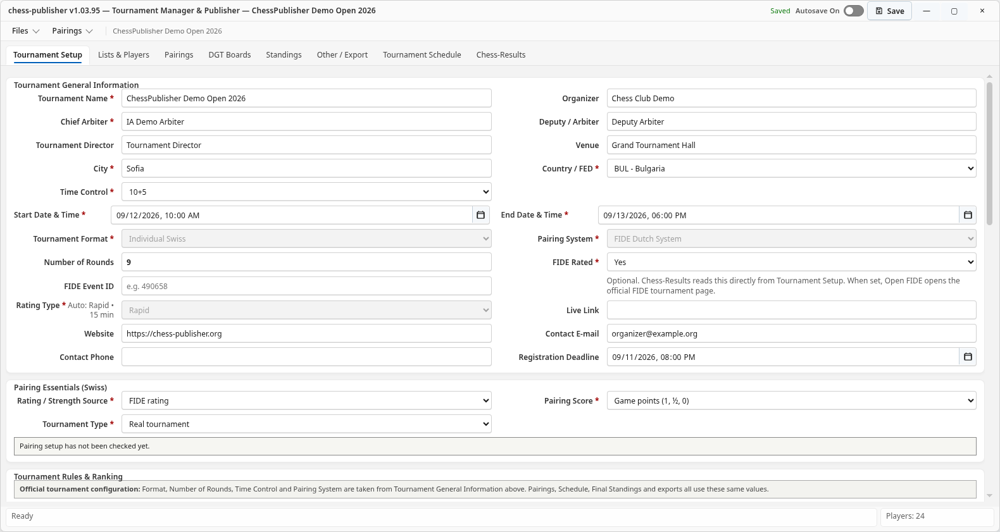
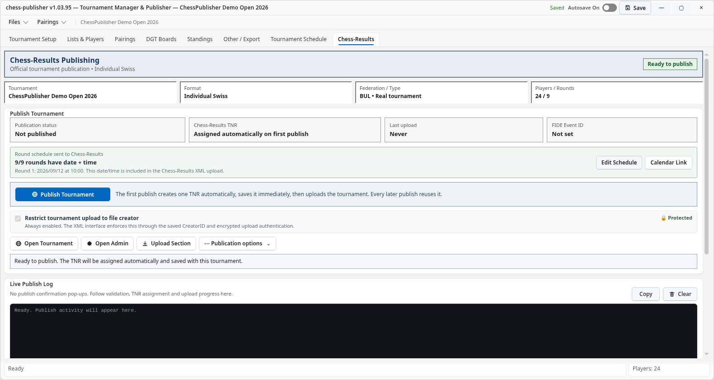
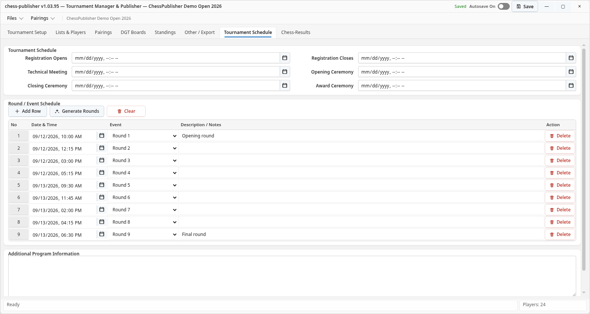

Tournament Hub
Publish starting lists, pairings, standings, schedules, regulations, contacts and attached files to a clean public web page.
Browse tournaments →One workspace for players, pairings, results, schedules, public tournament pages and FIDE tournament files — built for organizers and arbiters who want less switching and more control.

Product News · September 2026
The Chess-Publisher Web section is becoming WEB Companion — a focused browser workspace for the parts of tournament management that benefit most from mobility. Open a synchronized organizer tournament, update Tournament Setup, register and maintain players, synchronize changes through the private Cloud Workspace, and publish the same tournament to the Chess-Publisher Online Hub or Chess-Results through the protected server-side workflow.
Chess-Publisher 1.06.00 is here. Organize players, generate pairings with Gacrux 1.11.65, enter results and publish your tournament from one Windows workspace. The new stable release brings improved rating-list management, late-entry registration and clearer report controls, together with Cloud Workspace synchronization, Tournament Hub and Chess-Results publishing.
Chess-Publisher now connects the desktop workflow with a modern public tournament experience — while keeping the tools arbiters already depend on close at hand.
Publish starting lists, pairings, standings, schedules, regulations, contacts and attached files to a clean public web page.
Browse tournaments →Build a practical tournament schedule from dates, rounds and time control. Rapid, blitz and classical events adapt automatically to the available window.
Fast tournament log, mobile-friendly pairings, Starting List, live standings, Google Maps location links and player history.
Stronger TRF26 validation, safer tournament import and clearer FIDE rating impact information without changing the protected pairing core.
Keep the active event in one place from registration to the final report. Chess-Publisher is designed around tournament-day speed, visibility and repeatable workflows.
Prepare the starting list, generate rounds, enter results and keep the complete round history attached to the tournament.
Import participants, use local FIDE rating data, manage attendance and prepare the starting rank list without rebuilding the event elsewhere.
Independent checker workflows help review pairings and tie-break output before publication.
Update Chess-Results and the Chess-Publisher Tournament Hub directly from the same tournament workspace.
Import and export tournament/player data through formats used in real organizer workflows, including TRF and Swiss-Manager exchange paths.
Dedicated hardware diagnostics, serial/USB discovery, board mapping and PGN-oriented tournament workflows for DGT e-Boards.
Generate practical round times from the event window and time control, then keep the public schedule synchronized with the tournament.
Give players one clean link for Starting List, pairings, standings, schedule, regulations, location, contacts and tournament files — optimized for desktop and mobile.
Players should not need the organizer’s desktop. Publish the information they actually need — Starting List, pairings, results, standings, schedule, regulations, location and files — in a fast modern page that works on a phone.
A closer look at the production interface across the core tournament workflow, shown with a clean demo tournament.




Define dates, format, time control, rating type and the tournament schedule.
Import participants, review rating data and prepare the starting rank list.
Generate the next round, review the pairing, enter results and preserve history.
Update Chess-Results, produce tournament output and continue to the next round.
Chess-Publisher is released under the MIT License. The public repository contains the source, licensing information, security policy and build-related documentation.
Pairing note: Chess-Publisher integrates Gacrux 1.11.65 in its Swiss Dutch pairing workflow. Chess-Publisher itself is not presented as FIDE-endorsed software.
$ Open the public GitHub repository
$ Build Chess-Publisher from source
MIT licensed
Public source
Windows desktopGet the latest stable Windows installer or portable ZIP. The release information and download links update automatically when a newer published release is available.
View SHA-256 checksums ↗A practical update focused on tournament-day speed, publishing and reliability.
Public tournament directory and modern tournament pages with Starting List, pairings, results, standings, schedule, regulations, location, contacts and files.
Adaptive schedule generation for rapid, blitz and classical events, including realistic round slots and preserved breaks.
Stronger validation, safer handling of real-world FIDE/TRF data and better export diagnostics.
Clickable FIDE IDs, player tournament history and in-page FIDE rating impact analysis on public tournament pages.
Faster calendar handling, cleaner schedule editing, improved tournament switching and more ergonomic everyday controls.
Dedicated DGT board tools remain integrated for board discovery, diagnostics, mapping and PGN-oriented tournament workflows.
The latest published versions are kept here for traceability. Release Notes are loaded directly from the official GitHub Releases and displayed on this page.
For Chess-Publisher questions, tournament-organizer feedback, bug reports and collaboration enquiries, contact the project directly.
Chess-Publisher is free and open-source. If the application is useful in your tournaments, you can make an optional contribution toward testing, documentation, releases and project infrastructure.